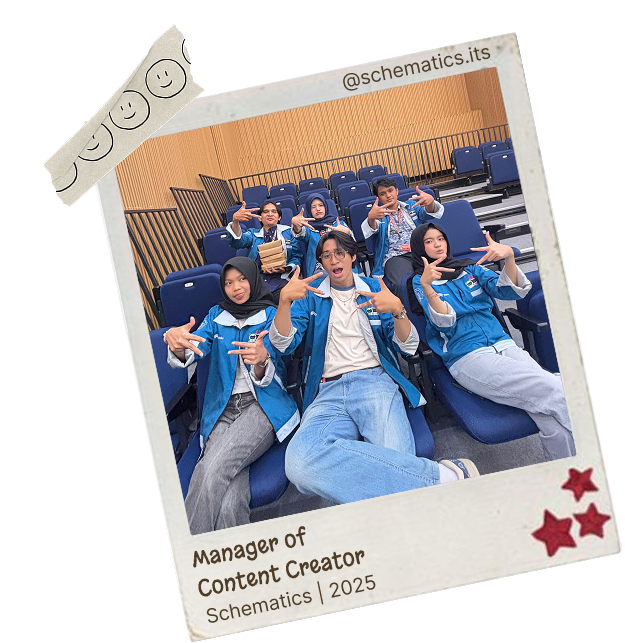
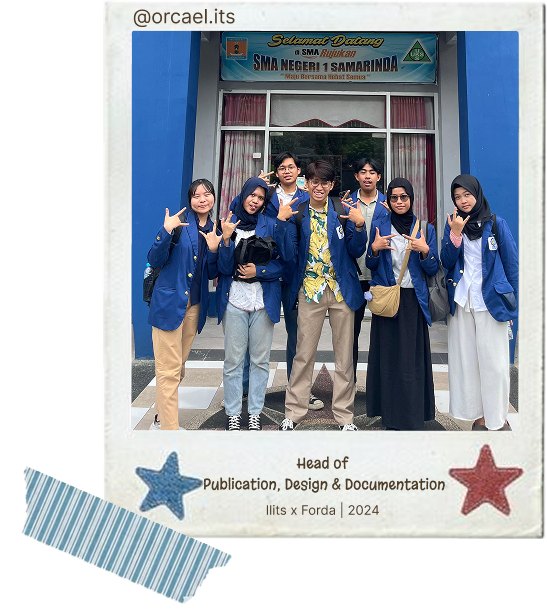
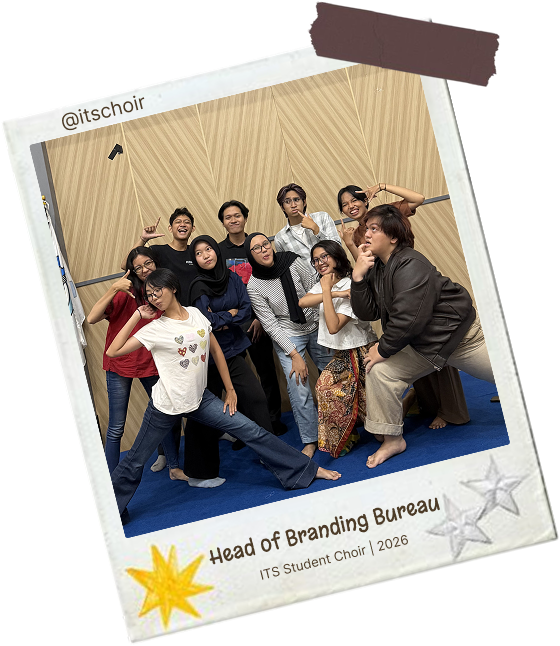

Content Strategy
Schematics ITS - Content Creation
Campaign planning, social media storytelling, and production for event engagement.
Case file 1
Files documenting campaign strategy, editorial planning,
production and platform storytelling. Each investigation begins
with an audience question and ends with a measurable answer.

Schematics ITS - Content Creation
Campaign planning, social media storytelling, and production for event engagement.

ITS x Forda - Documentation
Visual documentation workflow with clean publication assets and organized content output.

ITS Student Choir - Branding
Content direction and branding support for social presence, posts, and team publication.
1/3